第11章 整固形态
如果一支部队迅速地攻城略地、深入敌后，同时伤亡惨重、粮草将绝，那么这支部队必然会止步甚至有所撤退，在一个更易于防守的地方建立工事，补充给养，整装待发。股市中也是如此，我们称其为市场“整固”。当一只股票暴涨或骤跌达到一定程度之后，动能会衰竭，此后，该股要么会迎来长线或中线反转，要么会在支撑位附近整固，形成由多个短线波段构成的箱体震荡，直到找到方向，继续前行（见图11-1～图11-18）。
我们已经在对称三角形和箱体那一章中提到过整固形态，知道这两种形态既可能意味着反转，也可能表示要延续此前的走势。我们也提到过，约3/4的对称三角形和箱体将变成整固形态，而非反转形态。即使是形成于中线涨势中的平顶扩散形态，如果其水平顶被果断向上突破后，也可能会发展成为整固形态或持续形态。
道琼斯平均指数图表中的道氏横盘形态既可能是整固形态，也可能是反转形态，但前者的概率更大。道氏理论中的横盘也可以理解成一种松散的箱体。事实上，任何一种成交量逐渐萎缩的箱体震荡（且不形成明显扩散的趋势），都起到了股价整固的作用。大多数的趋势整固形态都清晰可辨。
11.1 旗形与三角旗形
此处我们无须花过多时间来讨论三角形和箱体，前面几章已经对它们的反转和整固形态做了详细讨论。而仅含有整固意义的两种形态，即旗形和三角旗形，则在某些方面与三角形、箱体和楔形有着非常有趣的关联。
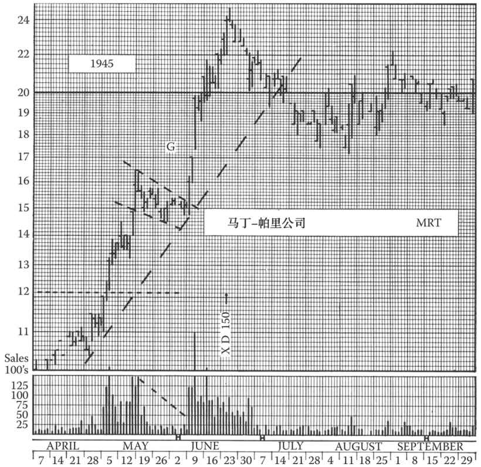
图11-1 这是马丁-帕里公司走出的一个典型且完美的旗形，形成于1945年5月12日至6月2日。这段时间内，股价从11美元迅速涨至16½美元，然后震荡了3周，期间成交量逐步萎缩。在第3周时，股价从下界线企稳回升，向上突破上界线，成交量放大，并于15～21日急速拉升。请于本章末学习旗形突破后的最小目标位时重温此图。12美元处的虚线表示前期阻力位（参见第13章）
从图表上看，旗形 形态就像一面旗子。旗形在涨势中看起来像一面正立的旗子，在跌势中则像一面倒转的旗子。旗形也可以被描述为紧凑的小平行四边形，或者是向趋势的反方向轻微倾斜的箱体。让我们先看涨势中的旗形，它们常见于非常陡峭甚至是近乎竖直的急涨之后。这种情况下，成交量通常呈现逐步增加的趋势。这种成交量（每笔交易既代表一个买单，也代表一个卖单）其实表明很多持股人在锁定盈利。最终获利盘令涨势止步，价格开始拉锯，并不再上涨，然后下跌2～3个百分点，成交量减少。接下来的回调将股价小幅拉低至前一个短线低点之下，且成交量进一步减少。从图形上看，股价一开始陡峭上涨，然后震荡，并在一个可大概画出上下水平界线的震荡区域轻微向下倾斜。那段陡峭上涨看起来像旗杆，而后续的震荡轻微下行走势则像旗面，整个形态看起来像一面旗子，因此得名。
旗形中的每次上涨或回调一般需要三四天，有些情况下则只要一两天。上下界线之间的距离越大，完成形态内的上涨和回调所需的时间自然越长。上下界线的距离越小，则短线波动可能会持续5～7天，有时候可能会持续3周。然后，股价会突然直线上涨，开启另一段涨势，几乎会复制此前一个旗杆的形态。
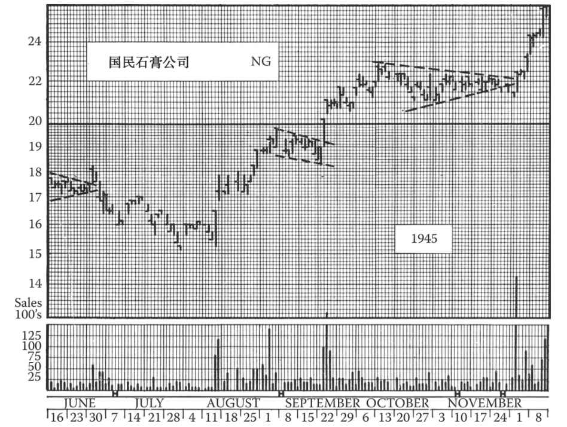
图11-2 这是另外一个典型的旗形，形成于1945年8月30日至9月18日，为期3周。这张图与图8-6有部分重叠，后者展示了5～6月形成的对称三角形顶点的假突破。该股于8月23日向上放量突破对称三角形的原顶点，并发出买入信号。最有趣的是该股于10～11月形成的第2个对称三角形，几乎完全复制了前一个对称三角形，只是在顶点时出现了一次向下假突破。11月27日的天量无疑证明了该形态是一个整固形态，而非反转形态。该股后来涨至33美元
前文中我们讲到旗形会轻微向下倾斜，但是有些非常窄且紧凑的旗形则常常是水平的，看起来像小正方形。（在很罕见的情况下，升势中的旗形可能会轻微向上倾斜。）
跌势中的旗形形成的方式和意义都跟涨势中的旗形相同。当然，下降旗形会向上倾斜，也就是上升旗形倒转过来的样子。在形态形成的过程中成交量逐渐减少，而在形态突破后会增加。
11.2 三角旗形：带尖角的旗形形态
三角旗形 和旗形 之间唯一重要的区别在于，三角旗形的两条界线逐渐收拢，而旗形的两条界线相互平行。也就是说，常规的三角旗形是一个紧凑、倾斜的小三角形。三角旗形在涨势中向下倾斜，而在跌势中向上倾斜。一般来说，三角旗形出现在股价经历一段急涨（或暴跌）后，在整个过程中成交量明显萎缩。其实成交量在三角旗形中萎缩的速度比在旗形中更快（考虑到三角旗形中每次的上涨或下跌时间越来越短，幅度越来越小，这也不足为奇）。在三角旗形完全形成且股价突破形态开启新趋势前，成交可能呈地量。
三角旗形也可以视作一个短小、紧凑的楔形，成交量不断萎缩。当三角旗形的倾斜方向和此前的趋势相反时（大多数情况下都是如此），它的预测原则和楔形一样，即股价的突破方向和形态的倾斜方向相反。但三角旗形和旗形一样也会出现一些罕见的变体，这些变体的持续时间很短，股价振幅很窄，且形态几乎保持水平（类似于对称三角形），或是形态的倾斜方向和先前的趋势一致。当股价突破这种三角旗形时，不会在某一天突然放量，而是会形成一条越来越弯的曲线，且伴随着成交量的逐级放大。整个形态看上去像一个弯曲的号角，以一个细长的尖端结束。但我们不必过于担忧这些变体，因为它们并不具有欺骗性，仍然很像常规三角旗形。
11.3 最小目标位测算公式
旗形的测算公式也适用于三角旗形。旗形和三角旗形都是“降半旗”式的形态，通常出现在股价暴涨或急跌后。在应用测算公式时，我们可以观察旗面出现前的那段旗杆，旗杆的起点（前一个整固或反转形态的放量突破点位）到旗杆的顶点（旗面的第一个短线反转点位）就是旗形突破后的最小目标位。事实上，旗形或三角旗形被突破后的涨势通常会超过这个最小目标位，而跌势却有可能达不到。因此，在应用这个测算公式时，我们最好在半对数坐标图上测算实际距离，而不是计算点位。你可以在本章相关图表上检验这一公式。
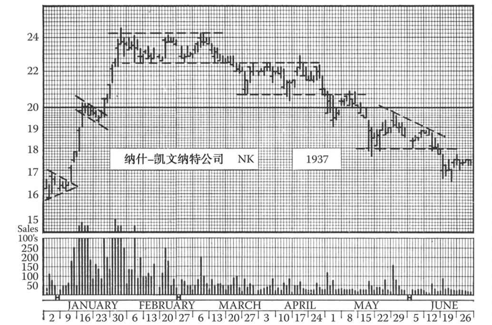
图11-3 图上这种“降半旗”式的旗形通常出现在牛市后期交投最为活跃的时期。1月出现的旗形是1937年牛市见顶前的最后一次整固。请注意3月出现的箱体反转形态以及之后的逐波下跌形态
11.4 旗形和三角旗形的可靠性
旗形和三角旗形这些较小的整固形态都很可靠，可用来预测股票的走向和涨跌幅。这些形态当然也会失效，但失效的旗形和三角旗形几乎总会在自身构筑完毕前发出警报。要防范这些形态失效，只需严格应用下列形态判别标准。
（1）整固形态（旗形或三角旗形）应出现于“竖直”的走势之后。
（2）在整固形态的构筑期间，成交量应持续显著萎缩，直到形态突破。
（3）股价应于4周内按原方向突破整固形态。如果过了3周还没突破，就要开始怀疑该形态的效力。
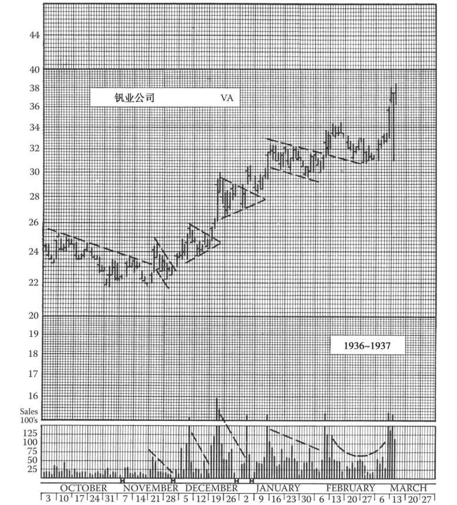
图11-4 有时，股价会在一波升势中走出连续的整固形态。在这个过程中，一些投资者建仓吸筹，同时另一些投资者获利了结。此图中钒业公司股价不断走高，1937年1月出现的旗形几天后就被突破，但2月4日的放量突破明确地告诉我们股价将持续上涨。最终，该股在3月见顶于39½美元。请注意12月14日发出的强烈买入信号。在第13章讨论支撑位和阻力位时请回顾本图
本书第二部分将介绍怎样根据这些形态进行交易，即具体的交易策略。但我想在这里对以上第2条标准加以说明。如果股价开始走出旗形或三角形，但与此同时成交量不明显萎缩，那么随后的走势更可能是相对于先前趋势的快速调整，而非先前趋势的延续。换句话说，如果它们伴随着较大或不规则的成交量，则说明这是短期反转区域，而非整固形态。所以，要时刻关注成交量。
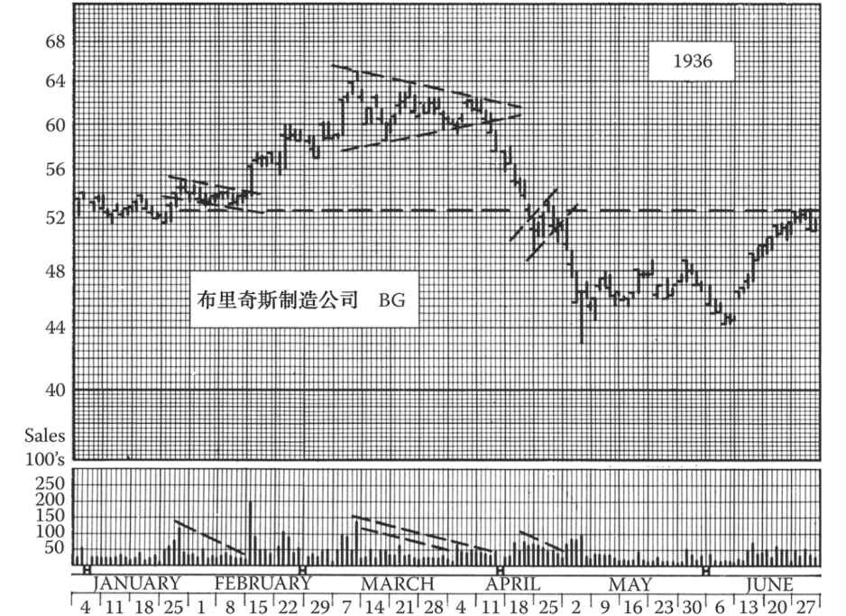
图11-5 布里奇斯制造公司的股价在1936年2月走出一个看涨旗形，然后在4月走出一个看跌旗形。2月和4月间的顶部是一个对称三角形态，股价于4月30日反转，后来于1936年11月反弹至64½美元，与此前3月的顶部形成了长线双顶形态。图中51～53美元的支撑/阻力区（以虚线表示）的效力一直持续至1946年（见第13章）
11.5 旗形和三角旗形可能出现在什么阶段
旗形和三角旗形整固都是短暂的走势，大多出现于牛市末期，而非建仓和稳步上涨阶段。因此，这些形态的出现可能预示着涨势已进入最后几周。而在熊市中，熊市的第二阶段是接近直线式的恐慌性下跌，其中若出现旗形或三角旗形，只会延续短短的三四天而非几周。在熊市的最后几个月里，出现在图上的旗形或三角旗形常会延续更长时间（4周或更久），在旗面中短线上涨时伴随着成交量的放大，短线回调则伴随着成交量的萎缩。
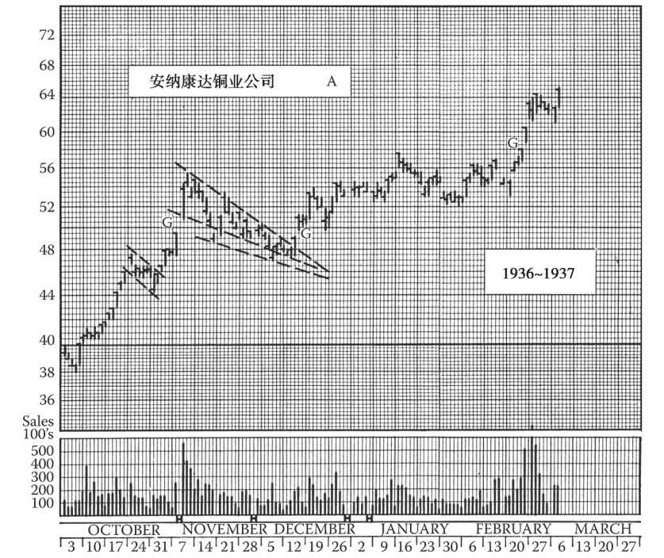
图11-6 安纳康达铜业公司股票1936年11月4日至12月9日的走势可被视为一个向下倾斜的楔形或三角旗形。请注意10月的小旗形、11月4日和2月19日的逃逸缺口、12月10日的突破缺口
一般来说，旗形和三角旗形最常见于上升趋势中。若股价在长线跌势后开始走出下降旗形或三角旗形，则必须谨慎看待。除非它们完全满足前文所述的可靠性判断标准，否则不要依据它们进行交易。
11.6 周线图和月线图上的旗形
关于旗形或三角旗形可靠性的前提条件之一是，形态从开始构筑到突破的时间不应长于4周。因此有理由认为，真正的旗形很少出现在周线图上，且根本不会出现在月线图上。你会在长期趋势图上找到一些时间长达8～10周甚至一两年、颇似旗形的区域，但它们并没有旗形的效力。若在日线图上来分析这些时间段的走势，你会看到很多不同的技术形态。大牛市后的市场走势从月线图上看往往会像旗形，但从日线图上看其实是反转形态。因此，不要信任长期趋势图上的旗形和三角旗形，不要以为它们预示着股价在整固之后将展开新一波上攻，而要仔细研读同期的日线图。
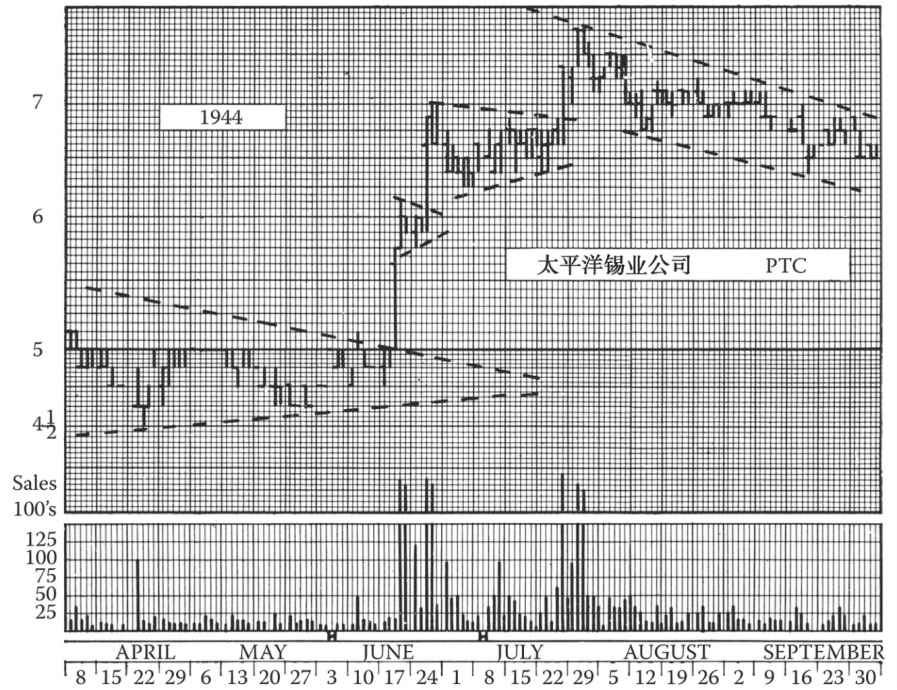
图11-7 1944年6月，太平洋锡业公司股票走出了一段可视为旗形的短暂震荡行情。股价在此前已构筑了一个为期13周的对称三角形，并在5美元时突破了该形态，此图只显示了该三角形最后两个月的走势。该股于7月又走出了一个三角形整固形态，随后到达7月短暂旗形预示的目标位
11.7 箱体整固：一种早期现象
旗形和三角旗形常出现在牛市末期，而箱体整固形态则常出现在牛市形成初期。箱体也可能出现在长线熊市的第一阶段，后面紧跟着恐慌性下跌，或出现在熊市的最后一段缩量抛售之前。熊市之所以以最后的缩量抛售告终，是因为有投资者认为股价已经足够便宜，并开始建仓，虽然后来事实证明有些仓促。（他们其实是对的，只要他们能拿稳手中的仓位，并耐心等到牛市到来。）
11.8 头肩形整固
迄今为止，我们谈论到的头肩形态（见第6～7章）均被认为是典型的反转形态。确实，在正常或大多数情况下，头肩形态无疑预示着趋势即将反转。但在少数情况下，当股价经历了数波震荡并构建了形似倒转的头肩图形时，会预示趋势的持续。
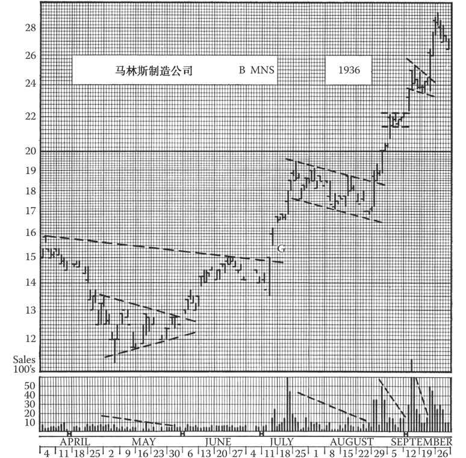
图11-8 此图展示了出现在牛市第3阶段的一系列旗形整固形态。马林斯制造公司股票在1936年用了6个月的时间从15美元涨到39美元，随后跌回至31美元，然后在1937年3月1日回升到前期高点，形成长线双顶。（注意该公司在1937年实施了1∶2拆股。）
7～8月的旗形延续时间长达5周，因此在没有更多技术证据的情况下，不能信任其效力（见“旗形和三角旗形的可靠性”一节中的第三点）。如果此类形态耗时过长，则突破形态后的升势往往不能持久，也可能根本不突破形态并弱势下跌。这张图上，在8月25日，该旗形似乎已“过期失效”；但到了8月27日，股价涨过前期高点，且成交量显著放大，此时买入显然是安全的
投资者一般不会混淆头肩整固和头肩反转形态。股价在涨势中可能走出形似头肩底的形态，而在跌势中可能走出形似头肩顶的形态，这些都是整固形态。等这些价格形态完成构筑之后（左肩、头部、右肩均很明显），其预示的方向也就确定了。但在头部阶段，也就是右肩没有形成时，形态往往不明晰，也不能预示股价走向。
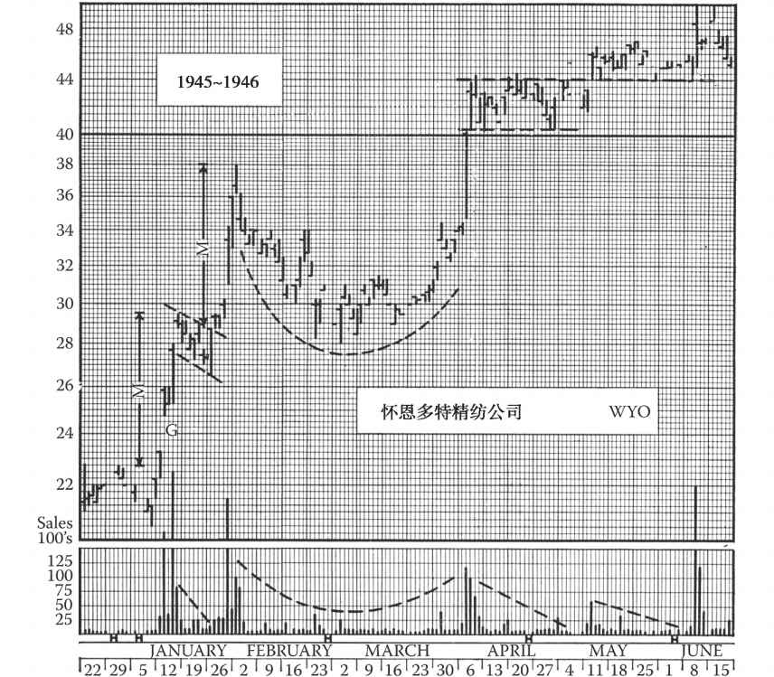
图11-9 标有M的竖线显示了旗形最小测量公式的应用。请注意第1段旗杆始于股价脱离前一个震荡区域的位置，止于该旗杆的顶点。第2段旗杆的高度则几乎与这段距离相等。怀恩多特精纺公司的这段走势完美诠释了旗形突破后最小测量公式的应用。股价在36美元以上遇到回吐压力。4月2日圆底构筑完成之后（请注意成交量），股价开始了新一轮上攻
这种整固形态的成交量并不符合头肩反转形态的规则。例如，在跌势中，整固形态形似头肩顶，但其左肩、头部和右肩的成交量都是在不断下降的，这一点和反转形态不同。同样，在涨势中，整固形态形似头肩底，但成交量形态却不同于反转形态。整固形态的突破则在各方面都与反转形态相似。
头肩整固形态很少有复杂或符合变体。理论上说，技术派应该会容易地将它们作为简单形态辨识出来。
头肩反转形态突破后最小目标价格变动（脱离颈线之后）的测算公式已在第6章中得到讨论。对于熟知股市趋势走势，阅图无数的投资者来说，这个公式的有效性令人赞叹。股价在形态突破后常常会达到（或稍微超出）公式所测算出来的位置。但是该公式却不能应用在头肩整固形态当中。因为头肩整固形态一般比较平，后续的股价变动往往超过或达不到该公式测算出来的位置。这种情况下，投资者可以参照其他图形的测算公式来评估后续可能发生的股价变动。
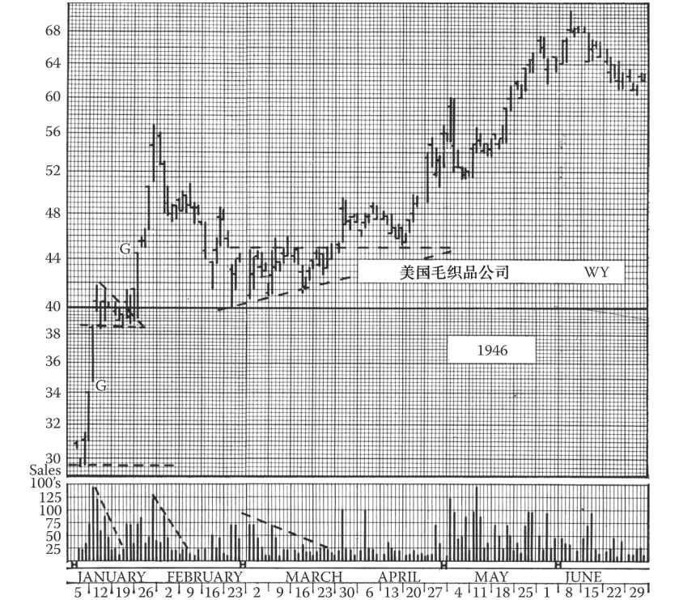
图11-10 这是技术派非常喜欢的一幅图。该公司股价于1月走出了一个完美的“半旗”形态，旗面的上下各有一段测量缺口；2月早期走出了一个下降旗形（请注意最小测量距离）；在下降旗形后的这一段调整中形成了一个上升三角形，并给出了买入信号，4月遭遇回踩
11.9 连续圆底形态
我们接下来介绍的这种形态和前文所述的整固形态都不同。前文所讨论的形态都会明显出现震荡或波动区域，且由一条或多条关键界线界定，但这种形态却并非如此。我们也可以把这种形态放到后续“正常趋势运动”一章讲，但它体现出某些股票和市场的典型特征，且与涨势中的整固原则息息相关，因此在这里介绍更为恰当。
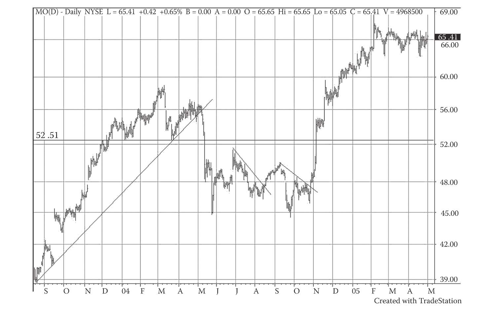
图11-11 来讲讲作为技术分析师的乐趣。这张图上出现了一个逃逸缺口，然后股价向下走出一个下降旗形，并出现形态缺口。但这些都是非常有趣的形态缺口。此后股价形成了一个三角形且被突破，然后走出一个上升旗形。这种过山车式的走势可能会令非技术派觉得无所适从，但对短线技术老手来说，完全可以从中捕捉交易机会
如果某只流通盘较大的股票在股价长期低迷后出现交投活跃、波幅狭窄的现象（类似过去美国无线电公司和飞马石油公司的股价表现），那么这只股票通常会以“连续圆底”的形态开启长线涨势。连续圆底中每一个圆底的股价和成交量变化都符合第7章圆底形态的特征，且都略微向上倾斜。也就是说，每一个圆底终点时的价位都高于起点（即前一个圆底的高点）。对于不同个股来说，每个圆底带来的净涨幅不尽相同，虽然每个圆底从左边起点至底部的回调会达到20%～30%（稍大于整个圆底的净涨幅），但圆底构筑结束股价的净涨幅会在10%～15%，持续时间则通常会在5～7周，基本不会短于3周。因此，股价会缓慢但稳步地上涨，就像落入井中的人向上爬三步又往下滑两步，但最终会成功逃脱。
如果股价出现上述走势，那么图表就会呈现出相似且对称的上升连续圆底形态，每个圆底紧随上一个圆底，中间基本没有停顿。成交量在每个圆底的后半部分放大，并在股价涨至前一个圆底的高点附近时达到天量，之后逐渐萎缩，直至股价跌至下一个圆底底部，然后随股价回升再次放大。
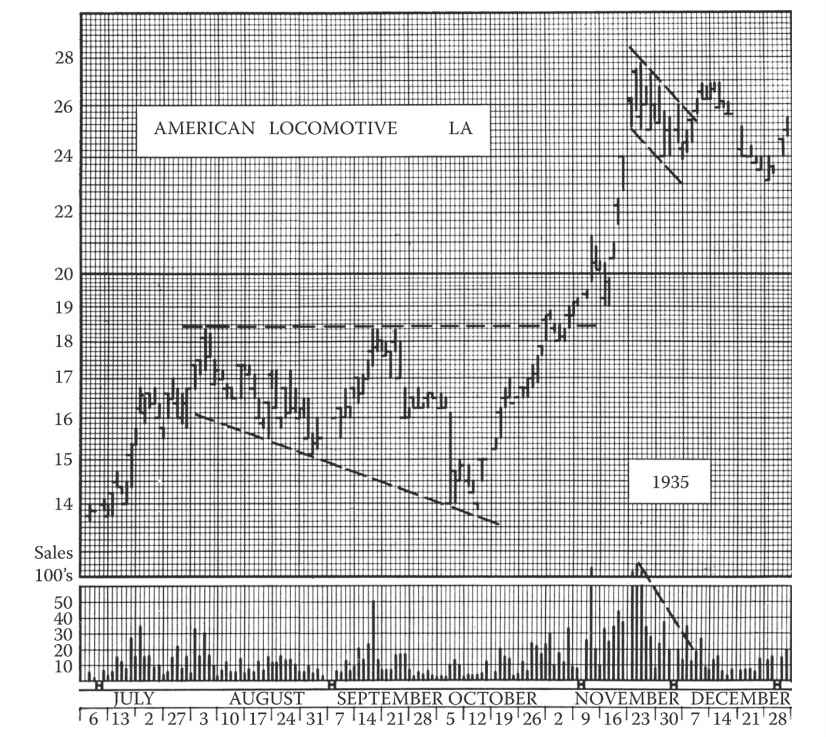
图11-12 11月末的旗形在刚出现那几周看上去似乎已经完全失效，但股价后来从12月23日的低位上涨至36¼美元，并最终达到最小目标位测算公式给出的价位。请注意该形态出现前的平顶扩散形态
连续圆底所带来的交易机会不必多说（但我们还是在本书第二部分给出了一些具体说明）。通过观察股价走势和成交量，我们可以轻松地找到每个圆底低点和高点。但很多盘口解读的专业人士却错误地在成交量不断放大（甚至达到天量）时买入，在股价达到低点时又毫无动作。
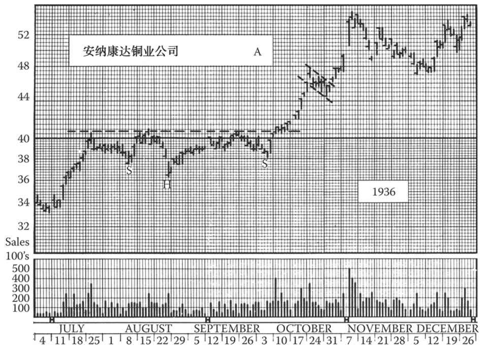
图11-13 安纳康达铜业公司走出的头肩整固形态在价格走势和成交量上都极具代表性。测算10月小旗形的最小目标位时，起点应为头肩顶的颈线突破点
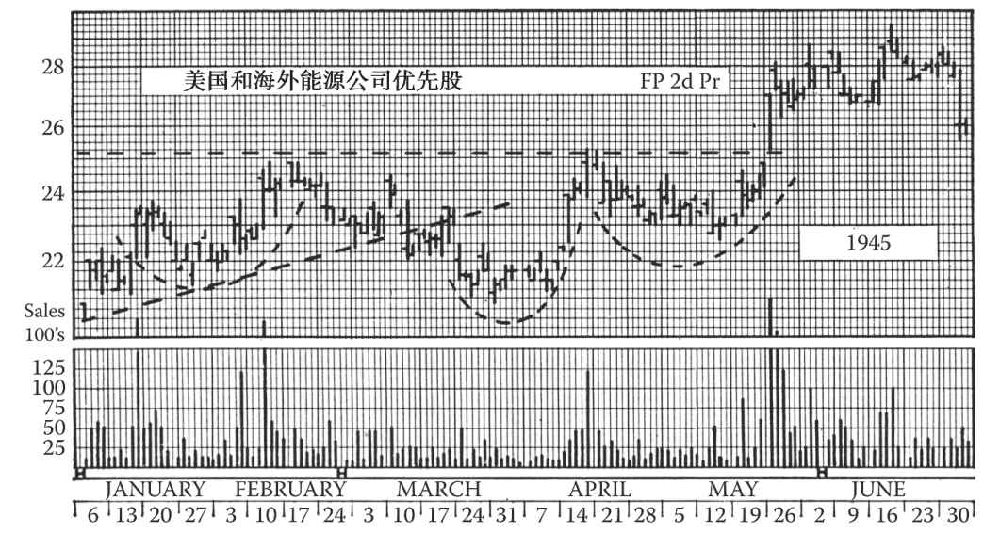
图11-14 1945年，该公司股价走出了一个头肩整固形态，头部和两肩都呈圆底形态。股价在7月升至31½美元，8月回落至25½美元，然后在11月暴涨至40美元
（许多短线客对技术形态不屑一顾。结果从长期来看，他们的资金都受到损失。真正的短线行家，也就是能够长期稳定获利的交易者，是非常罕见的。当你遇见这样的行家，你会发现他要么已经“把图表装进了脑袋里”，要么会在买卖股票之前仔细分析历史交易数据。）
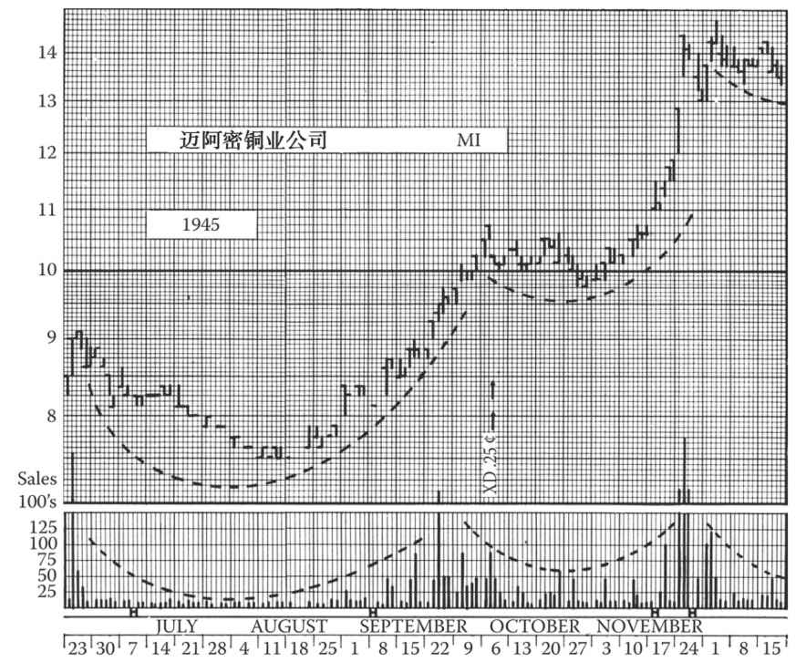
图11-15 迈阿密铜业公司股价走出了一个真正的连续圆底形态，只不过持续时间较短，10月回调幅度较小。12月开始了下一个圆底，股价先在1月跌至12½美元，随后于2月回升至18½美元。在本图所示时间之前，迈阿密铜业公司股价还在1945年2～6月走出了一个圆底
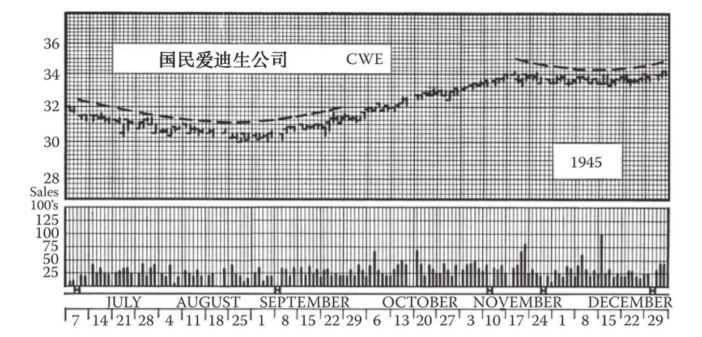
图11-16 虽然连续圆底形态多见于低价股，但有时也会出现在持股分散的中价股中，如图中的国民爱迪生公司股票
当股价走出连续圆底形态，且达到15美元后，股价形态就变得不那么规律了。这时，股价形态会渐渐偏离低价位时的那种光滑的圆形曲线。当股价超过20美元，股价走势会完全脱离连续圆底形态，开始快速直线上涨、回调，并走出标准的整固形态。这是中高价股的常见特征。（但也有特例存在：一些高价优先股交投一直很活跃，股价走势完全取决于市场利率和资金面的变化。这类股票在长线涨势中会持续走出连续圆底形态。）
我们在上文中提到两个明确的价位（15美元和20美元），但股价并不是走势偏离连续圆底形态的唯一决定因素。唯一可以确定的是，股价一旦开始构筑连续圆底形态，就会沿该形态持续发展下去，直至明显偏离该形态，即在某一个圆底的末尾出现比预期更大的涨幅。所以，如果你之前曾在有利的价位（圆底底部附近）买入该股，那么即使后来股价走势改变，你也不会因此蒙受损失。
低价股可能会在股价达到长线牛市顶部前一直维持连续圆底走势，甚至会在最后的高点出现后再试图走出一个圆底，却无法延续此前的连续圆底走势。
11.10 过去和现在的市场情况对比
我们在介绍反转形态时已提到，在20世纪60年代，有些反转形态出现得比以往更少，而有些反转形态则比以前更常见。整固形态也有这种现象。紧凑而严格符合要求的箱体和直角三角形现在也出现得比以往少。现在出现的对称三角形往往比20世纪二三十年代更松散、模糊。旗形、三角旗形等典型的获利了结形态似乎还和以往一样常见，而与一般趋势变化相关的图形（如头肩形、圆形反转等）变得更为常见。
这些变化的原因很明显。美国证券交易委员会的监管加强，保证金要求提高，公众监督增强，社会对投资与股票交易中各类问题的态度趋向保守，这些都是导致变化的原因。美国证券交易委员会和各家证券交易所的严密监控有效杜绝了坐庄行为，因此现在即使是“合法的”机构联手大规模建仓或出货也不常见了。
时至今日，“内幕人士”仍有可能通过推迟或提早公布影响股票走势的消息，实现自己的战略意图。但是，董事、高管、主要股东的股票买卖行为现在受到严密监控，所以很难实施欺诈。（不过当某家公司发布利好消息时，普通投资者还是切勿轻易追高。）
投资顾问和庄家的联手操纵行为已被定性为非法。（可以说，即使在20世纪20年代，此类行为也从未像许多业余交易者所以为的那样明目张胆地存在过。）美国证券交易委员会与各家证券交易所通力合作，对投资顾问行业实施严格、持续、有效的监管。即便投资顾问有实施欺诈或联手操纵的欲望，他们也没胆量那么干。大多数专业人士异常谨慎地避免任何可能引起怀疑的接触。
过去那样的疯狂投机行为并未完全消失，但高企的保证金比例和严格的监管使得“空头打压”不再容易实现，因此投机者很难从股市获利。彻头彻尾的短线客（编者按：他们的频繁买卖可能加大股价的每日波动性）依然存在，但已受到更高保证金要求的约束。近些年来，他们的身影主要出没于牛市的末期阶段。（编者按：请注意20世纪90年代末席卷市场的日间交易热潮。）他们的影响只是使成交量有所放大。
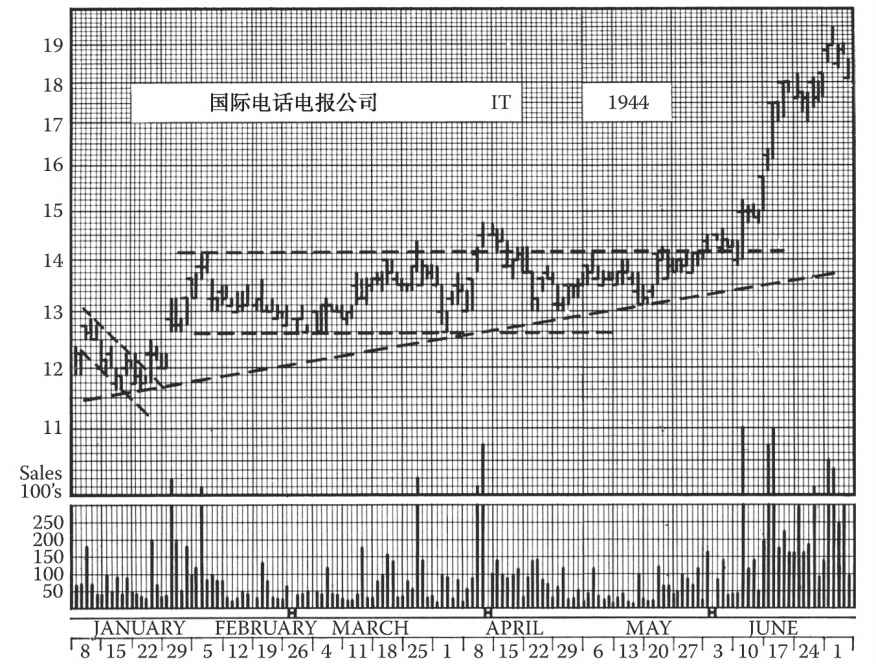
图11-17 这张图展示了国际电话电报公司13个月碟形整固的最后5个月走势。在这段碟形整固之前，该股于1943年年末、1944年年初从3美元飙升到了16美元。该股走势非常怪异，其日成交量变化很有欺骗性。然而，该股的长线价格走势形态相当可靠。在长线整固（出货及重新建仓）的最后阶段，股价先是走出了一个箱体（以及一次不成熟突破），然后构筑了一个上升三角形。该股1945～1946年的牛市顶部是一个巨大的头肩顶
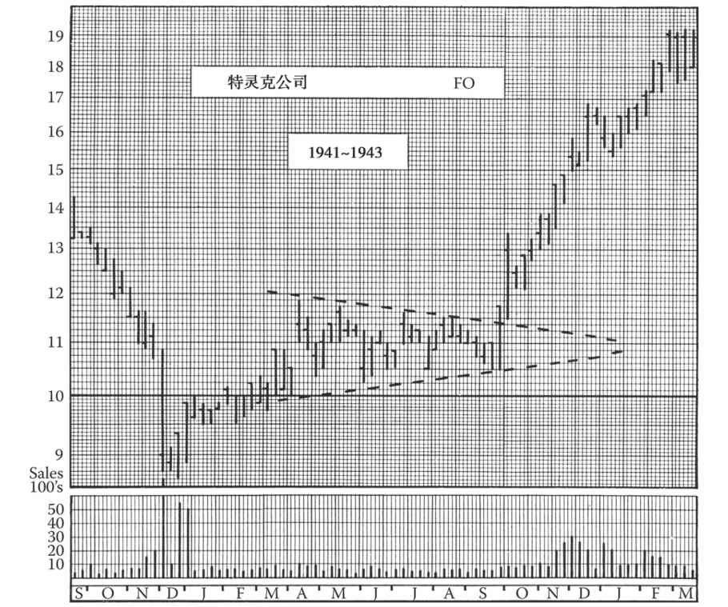
图11-18 有时，个股的整固形态给出的技术信号实际上是长线趋势反转。没出现清晰反转形态的长线反转虽然很少见，但确实存在，特别是股价处于底部时。特灵克公司的这张周线图就是一例。该股于1941年12月见底于8⅝美元后转牛，于1946年涨至47美元。该股在日线图或周线图上都未构筑任何重要的反转形态，第一波上攻就于1942年4月到达了11⅞美元。从那一点开始，该股构筑了6个月的对称三角形，然后于三角形的3/4处放量向上突破。这一走势，再结合该股立即突破了前期重要阻力位12美元的情况，足以表明该股至少已进入一波强劲的中线行情。此图上的技术图形组合（重要阻力位下方的一个大整固形态以及之后对重要阻力位和整固形态的突破）值得关注，特别是当股价可能由熊转牛时。阻力位将在第13章中讨论
而另一方面，更高的税赋和更严的监管并没有为小投资者提供更安全稳定的市场。更高的保证金要求未能防止恐慌性暴跌的发生。在现代监管制度建立以后，市场抗跌性反而变弱了，更易出现迅速、大幅的下跌。我们仍然看到与50年前相似的牛市与熊市，以及各种走势形态，这着实令人吃惊。1907年的很多图形在1966年仍能看到。（编者按：在2000年也能看到。所以，爱德华兹在早年的叙述几乎无须修改就适用于今天。第9版编者按：现在，股市坐庄或操纵被新的欺诈方式取代。许多证券经纪人和做市商因欺诈而被绳之以法。进入21世纪，对冲基金在澳大利亚遍地开花。它们在导致波动性加大的同时，也提供了更多流动性。同样的技术形态一再出现的原因是，不管计算机在交易中起多大的作用，交易最终是由人来进行的。确实，现在的技术形态似乎不如以往那样“规整”。趋势线，特别是水平趋势线，更多地呈现为“区域”而非清晰的线条，因此在解读时需要更多的主观判断。但是，爱德华兹于20世纪50年代在本书中写的内容，即使到了2005年也基本全都适用。）